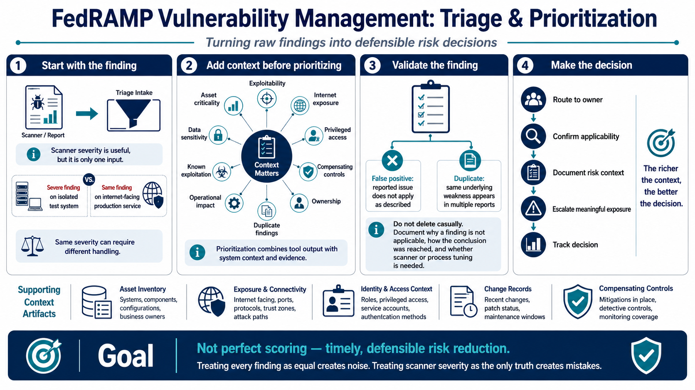

Triage, Prioritization, and Risk Context
Connecting to LMS... Progress: in progress

Narration
Triage turns raw findings into decisions. Scanner severity is useful, but it is only one input. Teams should also consider exploitability, asset criticality, internet exposure, data sensitivity, privileged access, compensating controls, known exploitation at a high level, operational impact, duplicate findings, false positives, and ownership. A severe finding on an isolated test system may need different handling from the same finding on an internet-facing production service.
Prioritization should combine tool output with system context and evidence. Asset inventory tells the team what the vulnerable component supports. Exposure data shows whether the asset is reachable. Identity context shows whether privileged access is involved. Change records show whether remediation may affect service availability. Compensating controls may reduce likelihood or impact while a permanent fix is planned. The richer the context, the better the decision.
False positives and duplicates need disciplined validation. A false positive is a reported issue that does not apply as described after review. A duplicate finding may refer to the same underlying weakness across multiple reports. Teams should not delete these casually. They should document why a finding is not applicable, how that conclusion was reached, and whether the scanner or process should be tuned.
Treating every finding as equal creates noise and slows remediation. Treating scanner severity as the only truth can also create mistakes. A practical program routes findings to owners, validates applicability, documents risk context, escalates meaningful exposure, and tracks decisions. The goal is not perfect scoring. The goal is timely, defensible risk reduction.